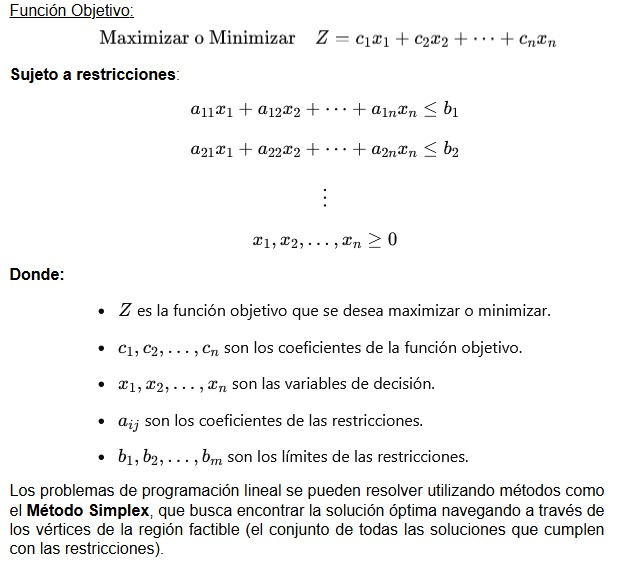

La programación lineal es una técnica matemática utilizada para optimizar una función objetivo lineal, sujeta a un conjunto de restricciones también lineales. Esta técnica se utiliza principalmente en situaciones donde los recursos son limitados y se busca maximizar o minimizar alguna variable de interés, como el rendimiento, el beneficio o la eficiencia. El problema general de programación lineal puede expresarse de la siguiente manera:
La programación lineal tiene aplicaciones en diversas áreas, como la planificación de recursos, la gestión de inventarios, la distribución de productos y la optimización de campañas publicitarias.
Optimización de campañas publicitarias: Uno de los casos más comunes es la asignación óptima de recursos publicitarios entre diversos medios de comunicación (televisión, radio, periódicos, etc.). En este contexto, la programación lineal permite maximizar el impacto de la campaña bajo un presupuesto limitado y con restricciones sobre el alcance de los medios.
Optimización de portafolios de inversión: En el ámbito financiero, la programación lineal se utiliza para la selección de portafolios de inversión. El objetivo es asignar recursos limitados entre diferentes activos (acciones, bonos, etc.) de manera que se maximice el rendimiento esperado, respetando restricciones de riesgo y de inversión en cada tipo de activo.
El Método Simplex es uno de los algoritmos más utilizados para resolver problemas de programación lineal. Su principal ventaja es que se aplica a problemas con muchas variables y restricciones, y busca la solución óptima desplazándose por los vértices de la región factible. Aunque este método es eficiente, su desempeño puede variar dependiendo del tipo de problema y de su estructura.
El algoritmo comienza en un vértice de la región factible y mejora progresivamente la solución hasta alcanzar el vértice que maximiza o minimiza la función objetivo. En cada iteración, el método selecciona la variable que puede mejorar más la función objetivo y ajusta la solución.
El análisis de sensibilidad es una técnica que permite estudiar cómo los cambios en los parámetros del modelo afectan la solución óptima. En programación lineal, esto es particularmente útil para entender cómo la variación en las restricciones (como el presupuesto o las tasas de rendimiento) puede influir en los resultados.
El análisis de sensibilidad permite a los decisores:
Este análisis es crucial en situaciones de incertidumbre, donde los datos exactos pueden variar con el tiempo o por factores externos.
En marketing, la programación lineal se usa para determinar cómo asignar el presupuesto publicitario entre varios canales de comunicación para lograr el mayor impacto posible. Este enfoque es útil en situaciones donde los recursos son limitados y se busca maximizar la exposición a la audiencia, respetando restricciones como el presupuesto y la disponibilidad de medios.
En finanzas, se aplica para la creación de portafolios de inversión optimizados. Los inversionistas utilizan programación lineal para asignar su capital de manera eficiente entre diferentes instrumentos financieros (acciones, bonos, fondos), maximizando el rendimiento esperado y minimizando el riesgo, todo sujeto a restricciones como el monto máximo de inversión en cada sector o el nivel de riesgo permitido.